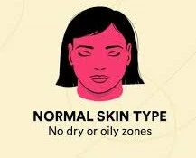
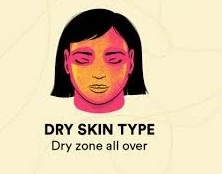
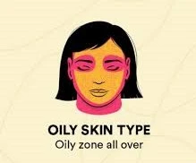
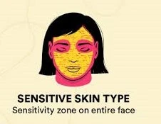
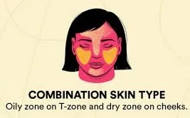

Welcome to the Skin section!
Our skin is the largest organ in our entire body.
It acts as a vital protective barrier and sensory interface with the environment.
As humans, we are born with different skin tones, skin undertones and skin types.
It is important we know how our skin's reaction when exposed to sunlight, what colors to wear that will compliment us and bring out our features and how to take care of our skin.
Skin Categories
So lets get started.
- Skin types
You can identify your type using the bare-faced test: wash your face gently, pat it dry, wait 30 to 60 minutes without applying any products, and observe how your skin feels and looks
There are five skin types.
Normal Skin
- Smooth appearance and few to no blemishes.
- Barely visible pores.
- Neither oily or dry.

Dry Skin
- Tight feeling.
- Small to no pores.
- Flaky rough patches and prone to age lines.

Oily skin
- Greasy or shiny appearance.
- Visible large pores.
- Prone to acne breakouts.

Sensitive Skin
- Itch skin.
- Reactive and easily irritated.
- Red patches.

Combination Skin
- Mild skin sensitivity and blackheads around the nose at times.
- Visibly large pores around the nose.
- Shiny T-zone, cheeks and other areas are dry or normal.

- Skin tones
Our skin tones are determined by melanin, a substance in your body that produces skin pigmentation.
Our skin tones are determined by genetics, lifestyle and sun exposure.
There are 5 different skin tones.
Fair / Pale / Ivory
- Very light skin, often with pink or cool undertones.
- Tends to burn easily in the sun.
Light / Honey
- Still on the lighter side, but warmer and more golden.
- May tan slightly but can also burn.
Medium / Indian / Neutral / Warm
- The most common tone globally.
- Ranges from beige to olive, usually tans more than it burns.
Olive / Dusky
- A richer tone with greenish or brown undertones.
- Hardly burns, easily tans, and naturally holds a golden warmth.
Dark / Deep
- Melanin-rich tones ranging from deep brown to espresso.
- Usually more resistant to sun damage, but still need protection to stay even.
- Skin undertones
It is the subtle, permanent color beneath the surface of your skin, and it is separate from your surface skin color (how light or dark your complexion is).
A common myth is that all dark skin is warm-toned; in reality, deep complexions can be warm, cool, neutral, or olive.
Two people with the same skin tone can still look totally different because of undertones.
There are 3 undertones
Warm Undertones
- Gold jewelry makes the skin light up and look vibrant.
- Warm cream, peach, yellow, olive cloth makes your face look smooth and healthy.
- When you look at your wrists, there are greenish veins.
- When you swatch two or three deep foundation shades (one warm/golden, one cool/red-blue, one neutral) along your jawline or the center of your chest in bright natural light, The right match disappears seamlessly into your skin rather than turning orange (too warm).
Cool Undertones
- Silver jewerly makes your features look crisp and clean.
- Stark white cloth or off-white, blue, black cloth flatters you without washing you out.
- When you look at your wrists, there are blue/purple veins.
- The skin burns before you tan
- When you swatch two or three deep foundation shades (one warm/golden, one cool/red-blue, one neutral) along your jawline or the center of your chest in bright natural light, the right match disappears seamlessly into your skin rather than turning gray (too cool/light).
Neutral & Olive Undertones
- Both gold and silver jewelry look good.
- Ranges from beige to olive, usually tans more than it burns.
- When you look at your wrists and your veins are hard to tell.
- The skin is a mix of burning before a tan or tans quilckly.
- When you swatch two or three deep foundation shades (one warm/golden, one cool/red-blue, one neutral) along your jawline or the center of your chest in bright natural light, you look great in all.